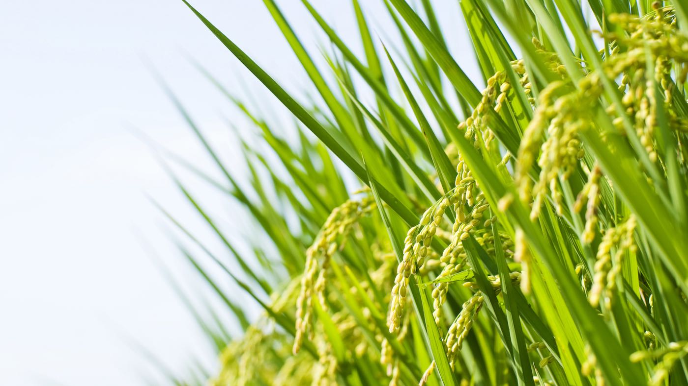

什麼是 JMAX？
JMAX 是高效能分子篩，是植物性高活度吸附與離子交換材料，最初由日本煤炭灰技術的引進，再研發進轉更安全有效的技術，廣泛運用了自然資源—稻殼灰—成功的讓植物系-類沸石在地球生態環保上佔了更重要的地位。
水、空氣、土壤資源是人類與地球共生的基本因素，維護與淨化才能使人類與地球健康的共存。
在台灣綜合各項技術演進發展多樣產品的應用技術，並成功研發了 JMAX 的造粒配方技術，且經台灣行政院原子能核能研究所驗證並採用，除核輻射技術為核害的水質，盡一分淨化之力。
產品特點：
- 資源環保與製造成本低：本產品採用天然植物性灰中含有之高含量、高純度之二氧化矽，後續再嚴控氧化鋁比例的添加，製成成份均一的矽鋁酸粉末，取材環保使用安全。
- 專業造粒後可製成不同幾何形狀與粒徑大小之成品，使用方便。
- 造粒產品功能有處理各種廢水之能力：
- 吸水
- 除氨
- 吸附重金屬
- 對水中銫137與鍶90的吸附效率分別可達 98% 及 85% 以上
- 屬無機類材料：使用後的廢棄吸附劑可輕易地進行固液分離回收。

JMAX 市場應用：
- 核電廠
- 核設施除役場址
- 核汙染地區
- 重金屬汙染地區
- 工廠廢水：排放水、回收水、貴金屬回收
- 養殖業淨水設備
- 民生用品：飲用水機濾材、保鮮產品除臭、空氣濾網
- 有機農業：下腳料可改質土壤